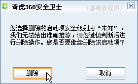

360安全卫士操作基础
十一、启动项状态 返回目录
启动项是指开机后自动运行的程序，比如输入法、杀毒软件等等，但是病毒也可能隐藏在这儿，下面我们来看一个练习；
1、运行程序
1）在桌面找到一个绿色盾牌的图标，这个就是安全卫士的快捷方式，双击运行360安全卫士；
2）程序运行后，首先进行系统检查，上面有个进度条不断移动，在下面的状态栏里还有升级的提示，
一般来说，绿色是安全的，黄色是警告提醒，红色是发现问题；
2、启动项状态
1）启动完成后，点击上边的“高级－启动项状态”；
2）经过扫描后，中间显示各个启动项列表，包括名称、安全级别、位置等等；
3）注意观察安全级别为“未知”的项目，如果暂时不想让它启动，可以打勾选中前面的复选框，然后点下面的“禁用选中项”，关闭该程序的自动启动，以后还可以点“开启选中项”按钮；
4）如果确定是不需要的启动项，点击名称后会出来一个黄色的提示，里面有详细的信息，下面是“删除此项”按钮，点击后删除该项；
5）出来一个提示，点“删除”按钮就可以删除该项了，点“取消”按钮返回列表；

本节学习了清理启动项的基本方法，如果你成功地完成了练习，请继续学习下一课内容；
本教程由86团学校TeliuTe制作|著作权所有
基础教程网：http://teliute.org/
美丽的校园……
转载和引用本站内容，请保留版权信息和本站链接。